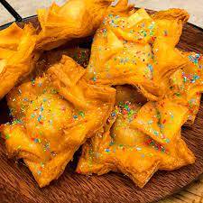

VIVA LA FIESTA DEL PASTEL
Todos los meses de diciembre el Pueblo de Gouin se viste con sus mejores galas para recibir a todos aquellos visitantes que se acerquen para participar de la 'Fiesta Nacional del Pastel', donde se pueden degustar distintos tipos de carnes asadas, deliciosas empanadas, pastas y conservas caseras y por supuesto los mejores pastelitos nacionales, escuchar buena música, disfrutar espectáculos criollos y compartir la elección de la mejor pastelera de la fiesta y de la reina del pastel.
Estación Fiesta del pastel
